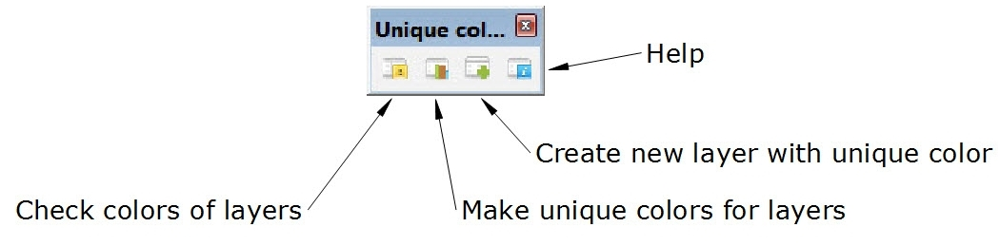

Changelog
08 october 2014 - version 1.0 - First release
Description
Ruby plugin for SketchUp 2014 to make all unique colors of layers in each 3D model. This plugin can help you to organize with layers more efficiently. Especially, when you need to export CAD SketchUp model. It works with all layers, except "Layer0" that the colors of other layers can be modified.
Plugin features:
- Analysis of the model for the presence of colors of layers
- Randomize colors of all or non-unique layers
- Create new layers with unique colors.
Usage
You can find in the main menu or toolbar.
Plugin > Unique colors for layers
-

- Check colors of layers - Analyse colors of layers in existing SketchUp file. When all layer colors in 3D model are unique, you will see message "All layers in model have unique colors". In other case you will see message "Model has N layer(s) with non-unique color(s). Fix it?". If click "Yes", all layers with non-unique colors will be with random unique colors.
- Make unique colors for layers - Change new colors for "Non-unique" or "All" layers of 3D model.
- Create new layer with unique color - Create new layers when you need to create only layers with unique colors in the 3D modeling process.
- Help - Show the plugin manual (this page) .
Installation
Plugin works only in Sketchup 2014. Update SketchUp before install. Installing Ruby Plugins in SketchUp